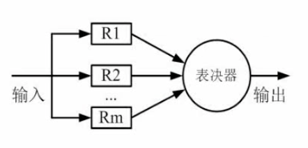

其他进制转换成十进制（按权展开）
例如二进制10100.01=1x24+1x22+1x2-2
同理八进制、十六进制
十进制转换成其他进制（短除法）
除以进制并且记录余数
注意从下往上
十进制转换八进制
如果是10进制转换为8进制，则从右到左分段，每三个一段
十进制转十六进制
如果是10进制转换为16进制，则从右到左分段，每四个一段
原码
最高位用于符号位，正数0，负数1
反码
正数同原码一样
负数的符号位不变，后面的所有位都取反
补码
正数同原码一样
负数在反码的基础上+1
移码
补码的基础上首位（符号位）取反
原码：-(2n-1-1)~2n-1-1
反码：-(2n-1-1)~2n-1-1
补码：-2n-1~2n-1-1
原码和反码有+0和-0分区分，而补码没有
通常表示为N=MxRe
其中R为进制，M为尾数，e为阶码）
注意对阶应该对大的部分对阶，例如1x103和1.19x102，应该化为0.119x103和1x103
主机基本组成：
| 体系结构类型 | 控制部分 | 关键特性 | 代表 |
|---|---|---|---|
| 单指令流数据流(SISD) | 控制部分:一个 处理器：一个 主存模块:一个 |
—— | 单处理器系统 |
| 单指令流多数据流(SIMD) | 控制部分:一个 处理器：多个 主存模块:多个 |
各个处理器以异步 的形式执行同一条指令 |
并行处理机 阵列处理机 超级向量处理机 |
| 多指令流单数据流(MISD) | 控制部分:多个 处理器：一个 主存模块:多个 |
被证明不可能 | 目前没有 |
| 多指令多数据流(MIMD) | 控制部分:多个 处理器：多个 主存模块:多个 |
能实现作业、任务、 指令等各级全面并行 |
多处理机系统 多计算机 |
注意代表的类型(重点)
注意多个核心处理器的电脑不属于单指令流单数据流，属于单指令流多数据流
| 指令集 | 指令 | 寻址方式 | 实现方式 | 其他 |
|---|---|---|---|---|
| CISC | 数量多，使用频率 差别大，可变长格式 |
支持多种 | 微程序控制技术 （微码） |
研制周期长 |
| RISC | 数量少，使用频率 接近，定长格式，大 部分为单周期指令， 操作寄存器，只有 Load/Store操作内存 |
支持方式少 | 增加了通用寄存器， 硬布线逻辑控制为主， 适合采用流水线 |
优化编译，有 效支持高级语言 |
目前绝大多数的计算机都使用CISC（复杂指令集）而移动设备，尤其是手机，Pad基本上都是用RISC（精简指令集）
流水线的通常流程:取值、分析、执行
| 取值 | 1 | 2 | 3 | ||||||
| 分析 | 1 | 2 | 3 | ||||||
| 执行 | 1 | 2 | 3 |
| 取值 | 1 | 2 | 3 | ||||||
| 分析 | 1 | 2 | 3 | ||||||
| 执行 | 1 | 2 | 3 |
流水线周期
流水线周期指的是执行时间最长的一段，步骤中最耗时的流程
流水线计算公式
一条指令执行时间+(执行条数-1)x流水线周期
1. 理论公式：(t1+t2+…+tn)+(n-1)x△t
2. 实践：(k+n-1)x△t
备注：△t为一个流水线周期时间
例题：若指令流水线把一条指令氛围取值、分析和执行三个部分，且三个部分的时间分别为取值：2ns，分析2ns，执行1ns，那么流水线周期是多少？100条指令全部执行完毕需要时间是多少？
| 取值 | 1 | 2 | 3 | … | n | ||||
| 分析 | 1 | 2 | 3 | … | n | ||||
| 执行 | 1 | 2 | 3 | … | n |
根据图表可得，1:2只有取值，因此需要1ns2:3和3:4需要照应到1的取分析和执行过程，因此需要2ns
解：
1.流水线周期是 2 ns
2.(2+2+1)+99x2=203 ns
流水线的吞吐率(TP)=指令条数/流水线执行时间
以上述例题为例，则TP=100/203
流水最大吞吐率=1/△t
流水线加速比S=不使用流水线执行时间/使用流水线执行时间
以上述例题为例，如果不使用流水线，则执行时间为500，则S=500/203
流水线的效率是指流水下设备利用率，在时空图上，流水线的效率定义为n个任务占用的时空去与k个流水段总的时空去之比
即流水线中所占用的时空÷所有时空
例如这样的任务流程:
周期取最大值3△t：
| s1 | s2 | s3 | s4 |
| △t | △t | △t | 3△t |
| s1 | 1 | 2 | 3 | 4 | |||||||||||
| s2 | 1 | 2 | 3 | 4 | |||||||||||
| s3 | 1 | 2 | 3 | 4 | |||||||||||
| s4 | 1 | 1 | 1 | 2 | 2 | 2 | 3 | 3 | 3 | 4 | 4 | 4 |
例如上述内容占用的时空区为(△t + △t + △t + 3△t) x 4=24△t
总共有15△t x 4 = 60△t
则流水线效率为24△t / 60△t = 2/5
| 很快 | CPU(的寄存器) | 容量很小 | ||
| 快 | Cache(缓存) | 按内容存取 | 容量小 | KB或者MB为单位 |
| 慢 | 主存(内存) | 容量大 | 以GB为单位 | |
| 很慢 | 辅存(外存) | 硬盘、光盘、U盘等 | 容量很大 |
注意：按内容存取的存储器又叫做相联存储器
Cache的概念
Cache工作于处理器和主存之间，用于提高CPU输入输出的速率，突破CPU与存储系统之间传送宽带限制。
在整个计算机存储体系中，除了CPU的寄存器，Cache的访问速度是最快的。
Cache改善系统性能的依据就是 程序的局部性原理
如果以h代表Cache的访问命中率，t1表示Cache的周期时间，t2表示主存储器周期时间，以读操作为例，使用"Cache+主存储器"的系统的平均周期是t3，则：
t3 = h x t1 +(1-h) x t2
其中(1-h)又称为失效率(未命中率)
例题：假设Cache的命中率为95%，Cache周期是1ns，主存储器的周期是1ms（注：1ms=1000ns)，那么使用“Cache+主存储器“的系统平均周期是多少？
解：t=95% x 1ns + (1-95%) x 1000ns
上式=50.95ns
局部性原理
局部性原理分为 时间局部性 和 空间局部性
时间局部性：刚刚访问结束的指令再次访问
空间局部性：访问刚刚访问的邻近的地址
主存的分类
| 随机存储器 | DRAM(动态RAM) |
| SRAM(静态RAM) | |
| 只读存储器 | MROM(掩模式ROM) |
| PROM(一次性可编程ROM) | |
| EPROM(可擦除的PROM) | |
| Flash(闪存) |
主存的编址
8x4位的存储器如下图
| 000 | * | * | * | * |
| 001 | * | * | * | * |
| 010 | * | * | * | * |
| 011 | * | * | * | * |
| 100 | * | * | * | * |
| 101 | * | * | * | * |
| 110 | * | * | * | * |
| 111 | * | * | * | * |
8个地址空间每个，每个地址空间存储了4bit空间
使用两块这样的存储器可以组成8x8位存储器
也可以组成16x4位的存储器
例：内存地址从AC000H到C7FFFH，共有____K个地址单元，如果该内存地址按字(16bit)编址，由28片存储芯片构成。已知构成此内存的芯片每片由16K个存储单元，则该芯片每个存储单元存储___位
解：
1.大的地址-小的地址，即
C7FFF-AC000+1=1C000=1C000
1C000的10进制为114688
114688÷1024=112 K
2.112K÷16K=7个
也就是至少需要7个就可以满足容量，总共用了28片
即(28÷7)*?=16 bit
可以得出每个芯片是4位
磁盘结构与参数
磁盘主要分为磁道、扇区和磁头
存取时间=寻道时间+等待时间(平均定位时间+转动延迟)
相关计算
例：假设某磁盘的每个磁道划分为11个物理块，每块存放1个逻辑记录。逻辑记录R0,R1……R10存放在同一个磁道上，记录存放顺序如下表所示
| 物理块 | 1 | 2 | 3 | 4 | 5 | 6 | 7 | 8 | 9 | 10 | 11 |
|---|---|---|---|---|---|---|---|---|---|---|---|
| 逻辑记录 | R0 | R1 | R2 | R3 | R4 | R5 | R6 | R7 | R8 | R9 | R10 |
如果磁盘旋转周期为33ms，当磁头当前处在R0的开始处，若系统使用单缓冲区顺序处理这些记录，每个记录处理时间为3ms，则处理这11个记录的最长时间为___；若对信息存储进行优化分布后，处理11个记录的最少时间为___。
1.解：
转一圈周期是33ms，则每转到相邻的扇页区需要33÷11=3ms
转到R0末尾的时候开始处理R0的数据(3ms)，略过R1
因此如果需要处理完R1数据，就需要再转一圈(33ms)，总共需要36ms
针对R0，只需要6ms即可，但是对于R1~R10一共需要33x10ms
因此这一问答案为33x10+6=336ms
2.解：
如上图所示，可以依次读取R0，处理R0，读取R1，处理R1……
这样便不需要重新再转一圈读取和处理，没有时间浪费
这样只需要转2圈，66ms
串联
串联模型中如果输入经由n个系统输出，其可靠性分别为R1、R2、R3……Rn
那么系统的可靠性R为：
R=R1 x R2 x R3 x …… Rn
失效率(仅适用于少量)为：
S=(1 - R1) + (1 - R2) + (1 - R3) + …… + (1 - Rn)
并联
并联系统中只有所有的系统失效才能失效
因此如果在并联模型中输入经由n个系统输出，其可靠性分别为R1、R2、R3……Rn
那么系统的可靠性R为：
R=1 - (1 - R1) x (1 - R2) x (1 - R3 x …… x(1 - Rn)
由下图所示，求系统的可靠性
解:R x (1 - (1 - R)^3) x (1 - (1 - R)^2)
模冗余系统与混合系统

R1～Rm的作用相同，最终系统通过表决器来选择其中之一（通常少数服从多数，相当于屏蔽错误）
模冗余系统与混合系统几乎不考察
通常通过增大码距的方式（增加冗余信息）来进行差错控制
码距就是指从A->B需要改变多少位
在上述的情况中，使用一位的二进制无法检查错误与否，使用两位二进制可以知道有错与否，但是无法知道其原本的内容，而使用三位二进制的编码，不仅可以知道错误与否，还可以知道其原本的编码
循环校验码可以用于检查是否有错但是无法用于纠正错误
其原理是使用模二方法相除检测是否有余数
例：原始报文为11001010101，其生成的多项式为：x^4+x^3+x+1。对其进行CRC编码后的结果为多少？
解：将生成的二项式转换为二进制形式
x^4+x^3+x+1
=>11011
然后将原始报文后面加上这个二进制位数-1个0
也就是说将11001010101=>110010101010000
_________________
11011 )110010101010000
11011
——————————
10010
11011
————————
10000
11011
————————
10111
11011
————————
11000
11011
————————
11000
11011
————————
0011
因此末尾的四个位为0011，则CRC编码后的结果为110010101010011
例:求信息1011的海明码
| 位数 | 7 | 6 | 5 | 4 | 3 | 2 | 1 |
|---|---|---|---|---|---|---|---|
| 二进制 | 111 | 110 | 101 | 100 | 011 | 010 | 001 |
| 信息位 | 1 | 0 | 1 | 1 | |||
| 校验位 | p2 | p1 | p0 |
解：1011一共4位，因此第一步求2^k-1≥4+k
求得k最小是3，因此需要3位校验位，设为p0,p1,p2
校验位分别为2^0、2^1和2^2位置上，即第一位，第二位和第四位上
p0 位是第一位，即001位，查找xx1的位置异或运算：
第3、5、7位异或（不同为1，相同为0）
p1 位是第二位，即010位，查找x1x的位置异或运算
第3、6、7位异或
p2 位是第四位，即100位，查找1xx的位置异或运算
第5、6、7位异或
| 公式 | 结果 | |
|---|---|---|
| p0 | 1⊕1⊕1 | 1 |
| p1 | 1⊕0⊕1 | 0 |
| p2 | 1⊕0⊕1 | 0 |
将结果填入表中，则最终得到：
1010101
即：
| 位数 | 7 | 6 | 5 | 4 | 3 | 2 | 1 |
|---|---|---|---|---|---|---|---|
| 二进制 | 111 | 110 | 101 | 100 | 011 | 010 | 001 |
| 结果 | 1 | 0 | 1 | 0 |
1 | 0 |
1 |
注意下面的是另一题了例:若收到的信息为1011101，那么是否有错，错在哪一位？
| 位数 | 7 | 6 | 5 | 4 | 3 | 2 | 1 |
|---|---|---|---|---|---|---|---|
| 二进制 | 111 | 110 | 101 | 100 | 011 | 010 | 001 |
| 结果 | 1 | 0 | 0 | 1 |
1 | 0 |
1 |
解：一共7位可得校验位是1,2,4，分别设为p0,p1,p2则:
p0=1⊕0⊕1=0
p1=1⊕0⊕1=0
p2=0⊕0⊕1=0
其中p0、p2有错
p0鉴别的是3、5、7
p1鉴别的是3、6、7
p2鉴别的是5、6、7
由此可得有错的是第五位